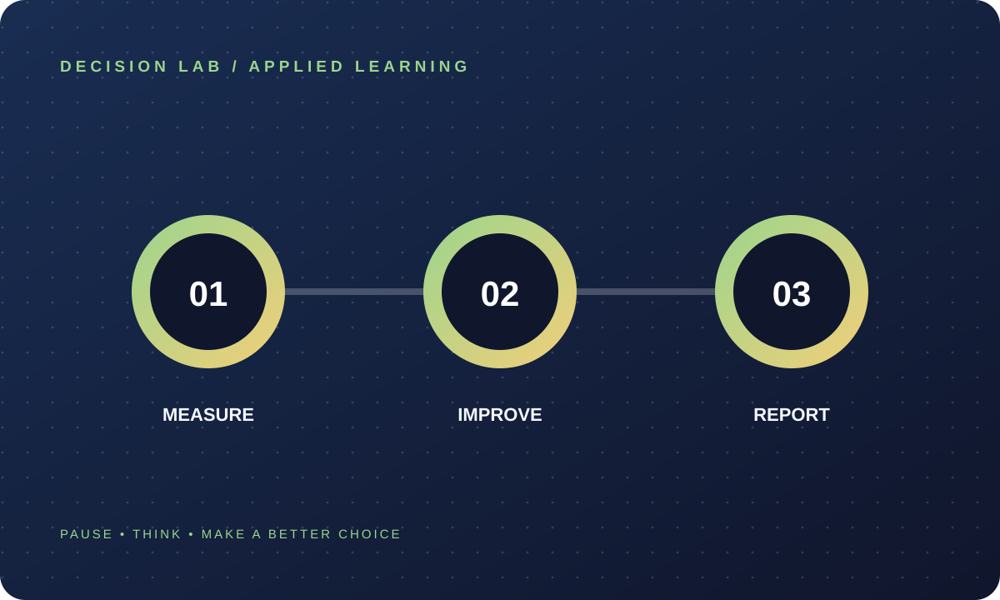

Describe the environmental, social and governance dimensions of ESG.
SUSTAINABILITY / INTERACTIVE HTML COURSE
Sustainability & ESG
An engaging introduction to environmental, social and governance issues and the practical choices that connect them to work.

VISUAL LEARNING EXPERIENCESHAY-ID / 06
SCROLL TO EXPLORE ↓
01 / COURSE OBJECTIVES
What you will be able to do.
By the end of this learning experience, you should be able to demonstrate these practical outcomes. Use them as a lens while you explore the chapters and make decisions.
Identify how resource use, travel, procurement and waste influence environmental impact.
Recognise social considerations such as safety, inclusion, fair work and supply-chain risk.
Distinguish credible, evidence-based sustainability claims from unsupported statements.
Differentiate activity measures from evidence of behaviour or operational outcomes.

02 / YOUR LEARNING MAP
Six steps. One connected journey.
Each chapter builds on the previous one, moving from awareness to a more confident workplace response.
Understand sustainability
Think beyond a single environmental action
Explore environmental impact
Use resources thoughtfully and reduce waste
Consider people and communities
Social sustainability includes how people are treated
Strengthen governance and integrity
Make commitments transparent and accountable
Make everyday choices
Connect individual actions to team practices
Measure progress honestly
Targets, indicators and transparent reporting
03 / EXPLORE THE CONTENT
Learn it. Connect it. Apply it.
Read through each chapter, examine the visual cues and consider how the ideas translate into day-to-day work.
CHAPTER 01 / UNDERSTAND SUSTAINABILITY
Think beyond a single environmental action
Sustainability considers how organisations create value while managing environmental, social and governance impacts over time. ESG is one way organisations structure and communicate relevant topics. It is broader than recycling and includes people, operations, supply chains, ethics and oversight. The relevant issues and priorities depend on the organisation and its context.
- Environmental topics include energy, emissions, resources, waste and nature.
- Social topics include people, safety, inclusion and communities.
- Governance includes accountability, oversight, ethics and transparency.
DESIGN TAKEAWAY
ESG connects how an organisation operates with the impacts and responsibilities that follow.
ESG connects how an organisation operates with the impacts and responsibilities that follow.
CONCEPT / 01
CHAPTER 02 / EXPLORE ENVIRONMENTAL IMPACT
Use resources thoughtfully and reduce waste
Environmental impact can arise from energy, materials, travel, water, logistics and product design. Everyday choices matter, but organisational change also depends on systems, procurement, facilities and operational decisions. Focus on the measures your organisation tracks and avoid making claims that go beyond available evidence.
- Notice resource use and avoidable waste in everyday processes.
- Consider travel, energy, materials and supplier choices.
- Use approved targets and data when discussing environmental performance.
DESIGN TAKEAWAY
A meaningful action connects to a real impact and can be evaluated.
A meaningful action connects to a real impact and can be evaluated.
CONCEPT / 02
CHAPTER 03 / CONSIDER PEOPLE AND COMMUNITIES
Social sustainability includes how people are treated
Social considerations include health and safety, fair working conditions, accessibility, diversity, inclusion, human rights and community impacts. A responsible approach asks who benefits, who may be affected and whether people have a way to raise concerns. Supply-chain decisions can influence working conditions far beyond the organisation’s own sites.
- Consider worker safety, fair treatment and access to opportunity.
- Notice impacts on customers, suppliers and local communities.
- Use appropriate channels to raise concerns about harm or unfair practices.
DESIGN TAKEAWAY
A sustainable organisation considers people throughout its value chain.
A sustainable organisation considers people throughout its value chain.
CONCEPT / 03
CHAPTER 04 / STRENGTHEN GOVERNANCE AND INTEGRITY
Make commitments transparent and accountable
Governance sets out how decisions are made, responsibilities are assigned and performance is overseen. It includes ethical conduct, risk management, controls and accurate reporting. Sustainability claims should have a clear scope, evidence and owner. Avoid vague promises or statements that imply more progress than the data supports.
- Understand who owns decisions, targets and oversight.
- Use accurate, traceable information when reporting progress.
- Avoid greenwashing, exaggerated claims and unsupported comparisons.
DESIGN TAKEAWAY
Good governance helps turn commitments into accountable action.
Good governance helps turn commitments into accountable action.
CONCEPT / 04
CHAPTER 05 / MAKE EVERYDAY CHOICES
Connect individual actions to team practices
Employees can influence sustainability through purchasing, travel, resource use, product design and how they handle suppliers and customers. The best action depends on the role and the organisation’s priorities. Use approved guidance rather than improvising claims or making commitments on behalf of the organisation.
- Choose options consistent with organisational standards and targets.
- Raise opportunities for process improvements with relevant owners.
- Consider lifecycle effects rather than only the immediate purchase or action.
DESIGN TAKEAWAY
Individual choices have more impact when teams and systems support them.
Individual choices have more impact when teams and systems support them.
CONCEPT / 05
CHAPTER 06 / MEASURE PROGRESS HONESTLY
Targets, indicators and transparent reporting
Metrics help show whether action is producing a result. Distinguish activity measures, such as training completion, from behaviour changes and operational outcomes. Use consistent definitions, reliable sources and the right reporting period. Explain assumptions and limitations. When data is incomplete, say so rather than filling gaps with guesses.
- Connect indicators to an identified impact or objective.
- Use consistent definitions, baselines and reporting boundaries.
- Explain uncertainty and avoid treating activity as proof of impact.
DESIGN TAKEAWAY
Credible reporting explains what is known, how it is measured and what remains uncertain.
Credible reporting explains what is known, how it is measured and what remains uncertain.
CONCEPT / 06
04 / DECISION LAB
What would you do next?
Use the ideas from the course in a short workplace situation. Select the response you would take and review the feedback.

WORKPLACE MOMENT / APPLY YOUR JUDGEMENT
A draft presentation says the organisation is “carbon neutral” based on a small office recycling initiative. No emissions boundary or supporting data is provided.
Choose the most appropriate response.
05 / KNOWLEDGE CHECK
Make the learning stick.
Answer five questions to check your understanding. Submit when you are ready to see your score and review the explanations.
YOUR NEXT STEP
Take the idea
into your work.
Choose one action from this course to apply in your next relevant task or conversation. Learning becomes valuable when it changes what we notice, decide or do.